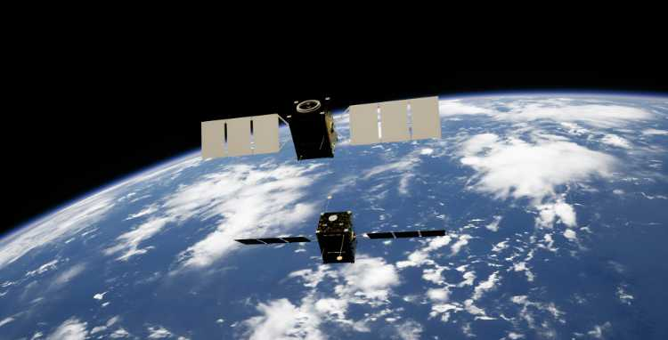

Sunlight and Eclipse Periods Analysis for a SSO orbit

credit: Photo by Kevin Stadnyk on UnsplashCode can be found here
Introduction
It is critical for mission planning to know the times for eclipse and sunlight for power management and thermal control missions. Solar-powered satellites draw energy whenever they are out of sunlight because onboard batteries will sustain power during an eclipse while in the shadow of the Earth. The actual frequency and time duration of eclipses can change according to the orbit of the satellite.
This blog post is based on the computation of sunlight and eclipse hours for a satellite using Python and the Skyfield library. A Sun-Synchronous Orbit with varying Right Ascension of the Ascending Node (RANN) values and computing the aggregate sunlight and eclipse hours for 31 days (744 hours) will done.
Methodology
Step 1: Define the Satellite Orbit
We define a satellite with the following orbital parameters for a SSO orbit:
- Semi-major axis (sma): 6878 km (500 km altitude)
- Eccentricity (ecc): 0.03
- Inclination (inc): 97.4°
- Argument of Perigee (aop): 0.0°
- Mean Anomaly: 0.0°
- Epoch: January 1, 2025, 12:00 UTC
Generate a Two-Line Element (TLE) set based on these parameters:
from skyfield.api import load, EarthSatellite, wgs84
from datetime import datetime
from pytz import utc
import math
ts = load.timescale()
base_params = {
'sma': 6878.0,
'ecc': 0.03,
'inc': 97.4,
'aop': 0.0,
'mean_anomaly': 0.0,
'epoch': datetime(2025, 1, 1, 12, 0, 0, tzinfo=utc)
}
def create_tle(satellite_name, raan):
mu = 3.986004418e5 # Earth's gravitational parameter (km^3/s^2)
sma_km = base_params['sma']
n_rad_s = math.sqrt(mu / (sma_km ** 3))
n_rev_per_day = n_rad_s * 86400 / (2 * math.pi)
mean_motion = f"{n_rev_per_day:11.8f}"
line1 = f"1 00001U 00000A 25001.50000000 .00000000 00000-0 00000-0 0 0001"
line2 = f"2 00001 {base_params['inc']:8.4f} {raan:8.4f} {base_params['ecc'] * 1e7:07.0f} {base_params['aop']:8.4f} {base_params['mean_anomaly']:8.4f} {mean_motion} 00"
return EarthSatellite(line1, line2, satellite_name, ts)Step 2: Computing Sunlight and Eclipse Durations
Using Skyfield, determine if the satellite is illuminated by the Sun in order to find out when it is in eclipse. The function calculates the total period of sunlight and eclipse for one month.
from skyfield.searchlib import find_discrete
def total_eclipse_sunlight(satellite):
eph = load('de421.bsp')
start_time = ts.utc(2025, 1, 1)
end_time = ts.utc(2025, 2, 1)
def is_eclipse(t):
sunlit = satellite.at(t).is_sunlit(eph)
return ~sunlit # Returns True if in eclipse, False if in sunlight
is_eclipse.step_days = 0.0005
times, events = find_discrete(start_time, end_time, is_eclipse)
total_eclipse = 0.0
total_sunlight = 0.0
previous_time = start_time
previous_state = is_eclipse(start_time)
for ti, state in zip(times, events):
duration_hours = (ti - previous_time) * 24
if previous_state:
total_eclipse += duration_hours
else:
total_sunlight += duration_hours
previous_time = ti
previous_state = state
final_duration = (end_time - previous_time) * 24
if previous_state:
total_eclipse += final_duration
else:
total_sunlight += final_duration
print(f"Total sunlight: {total_sunlight:.2f} hours")
print(f"Total eclipse: {total_eclipse:.2f} hours")Step 3: Running the Analysis for Different RAAN Values
The responsible factor for influencing eclipse duration is the position of the right ascension of the ascending node (RAAN) with respect to the orientation of the orbit concerning the Sun; there are three values possible for RAAN:
raan_values = [50.0, 120.0, 240.0]
for raan in raan_values:
satellite = create_tle(f"Sat_RAAN_{raan}", raan)
print(f"\nRAAN: {raan}°")
total_eclipse_sunlight(satellite)Results
Eclipse and Sunlight Durations
| RAAN (°) | Total Sunlight (hours) | Total Eclipse (hours) |
|---|---|---|
| 50.0 | 526.27 | 217.73 |
| 120.0 | 465.76 | 278.24 |
| 240.0 | 484.98 | 259.02 |
Observations
- The total excursion in eclipse lies under RAAN and varies substantially and in a given month could range from 217.73 to 278.24 hours.
- Maximum eclipse time is a recorded observation when RAAN = 120°, which goes to minimum for RAAN = 50° (217.73 hours).
- It implies an almost 60-hour difference in eclipse per month with respect to the RAAN, evidencing the dependence of the sunlight exposure on the orbit orientation.
- These eclipse durations give an average eclipse duration per orbit somewhere around 27 to 35 minutes, while the duration for each might be longer or shorter.
Conclusion
An analysis describing the computation of sunlight and eclipse durations experienced by satellites using Python and Skyfield is given. Indeed, eclipse prediction becomes a critical measure in power management, thermal control, and most importantly, general mission planning for the satellite.
Major Points:
- Periods of shadow are experienced by satellites, thus requiring them to fly battery-powered.
- Total eclipse duration is affected by RAAN, but small variations can generally found for Sun-Synchronous Orbits.
- Python and Skyfield provide powerful open-source tools to analyze orbital illumination conditions.
- Mission planners need to optimize battery storage and solar panel efficiency to ensure that operations are continuous through eclipse phases.
By understanding the eclipse patterns, engineers can describe as well as design resilient power systems for satellites that continue functional even during long shadow periods.